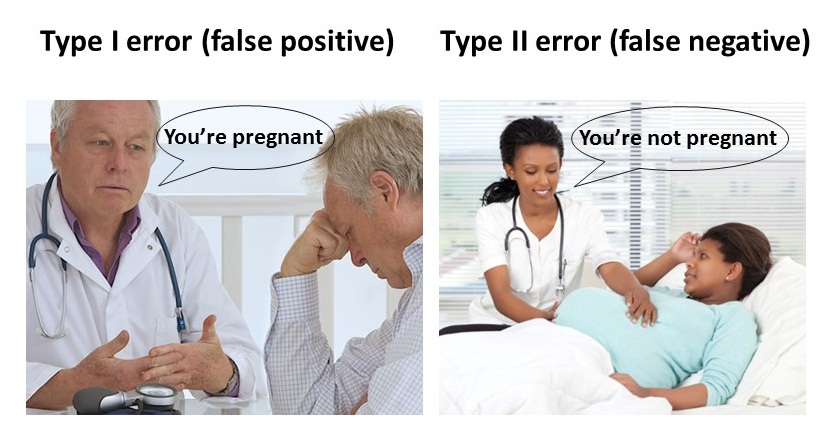

Error types
You probably noted the level of caution used while testing hypotheses. That is because we work on probabilities, so we are never certain.
In hypothesis testing, we deal primarily with those things we could never know for sure; there is always a chance that we are wrong when making a conclusion. That chance of being wrong can be separated into two different types of errors called Type I and Type II errors.
I found a couple neat examples online you should check for further clarification on the Type-I and Type-II errors here and here
Lets try the one example about going to hell or to heaven depending on your threshold of what qualifies as a good or a bad thing…the example goes like this:

Figure 8.12: Errors that send you to hell
There is a God, we have never met in person, that holds the ultimate threshold of the actions that qualify to go to heaven or not. Because we do not know the guy, and we do not have fully clear guidelines, there may be an speculation on that threshold. The point here is that there is an ultimate threshold, the ultimate truth, which we do not know for certain.
On the other side of this problem is our judgment of what God would mean such threshold is. The ten commitments were a nice start, but what about when you are mean to your teacher?. The Bible says do not do to others what you do not want others to do to you. Would being mean to another person take points out my score to go to heaven?. If I were you I would play it save and be nice to everyone, including your teacher, but we are uncertain if being mean reduces the score of the going-to-heaven ticket.
The point above is that there is an ultimate threshold that defines the truth, a threshold that we do not know for certain, but that we can approximate. This approximation threshold is what we called \(\alpha\) earlier: the chance we are giving ourselves to be wrong in our decisions.
When our human \(\alpha\) threshold matches the divine threshold, then we got lucky, and we were right every time we did something in life. No errors here. I did all right things knowingly knowing I will end up in heaven or I did all wrong things knowingly knowing I would end up in hell.
However, if my threshold was too low and I did a lot of mean things, that turned out to be bad and reduced my going-to-heaven-score, then my threshold did have an error that let me to conclude that doing certain things were ok, when in truth they were not. If you think about this type of error, you accepted the hypothesis that certain things were ok, but turned out to be they were not fine. This is what is call a false negative, or a Type II error.
Say that in the opposite my threshold to define what was right or not was too high. While it may help me minimize my Type II error, such a very high threshold means that I am probably not doing things that could be ok, things that may make life nicer. A very high threshold will lead to what is call a false positive or a Type I error. Rejecting things that turned out were ok.

Figure 8.13: Type I and Type II errors
A false positive, also call Type I error, is to reject the null hypothesis when it is, in fact, true.
A false negative, also call Type II error, is to accept the null hypothesis when it is, in fact, false.